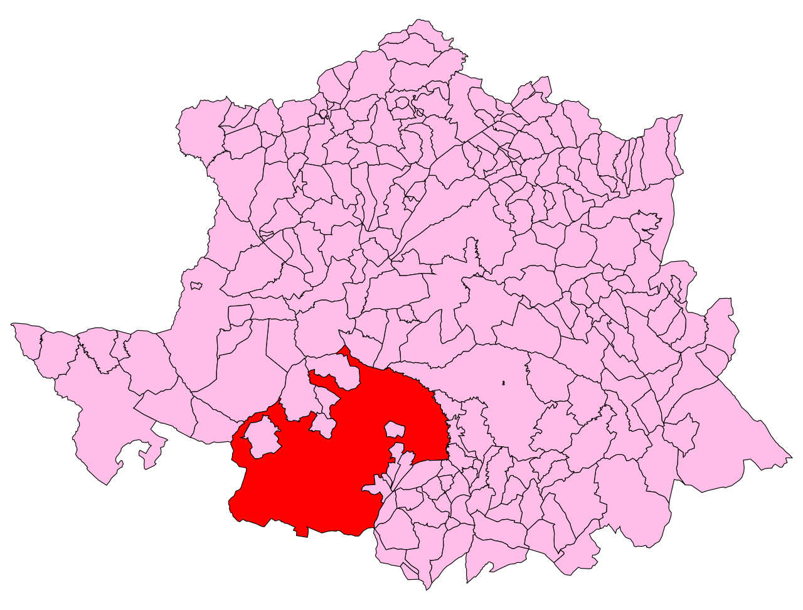
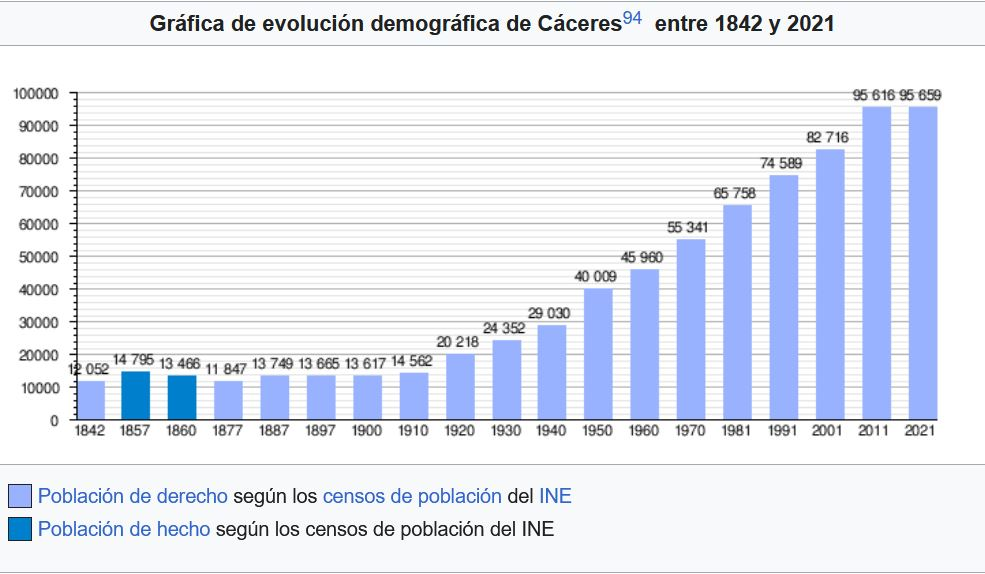
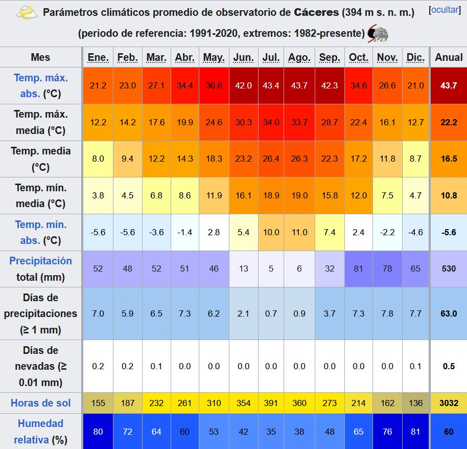

UBICACIÓN
Cáceres es una ciudad y municipio español situado en el centro de la comunidad autónoma de Extremadura. La localidad es la capital de la provincia homónima y alberga la sede del Tribunal Superior de Justicia de Extremadura. El municipio, que no pertenece a ninguna mancomunidad integral, limita con otros municipios de su misma provincia pertenecientes a las mancomunidades de Sierra de San Pedro, Tajo-Salor, Trujillo y Montánchez, así como con la vecina provincia de Badajoz. Desde el punto de vista de la geografía física, el municipio abarca tanto una parte llana en la penillanura trujillano-cacereña como una parte montañosa en la sierra de San Pedro; la ciudad se ubica sobre un conjunto de colinas, los Alcores, que sobresalen en la citada penillanura.
El término municipal de Cáceres, con una superficie de 1750,23 km², es el más extenso de España y en el mismo se ubican tanto la ciudad de Cáceres como tres pedanías: Estación Arroyo-Malpartida, Rincón de Ballesteros y Valdesalor. Existen además numerosos lugares habitados diseminados por el municipio, incluyendo castillos y cortijos con varios siglos de historia y ocho núcleos irregulares. La ciudad se organiza desde 2008 en cuatro distritos: Centro-Casco Antiguo, Norte, Oeste y Sur; un quinto distrito, Pedanías, abarca la parte no urbana del término.
POBLACIÓN
Cáceres cuenta con una población de 96 441 habitantes (INE 2024).
CLIMA
De acuerdo con la clasificación climática de Köppen el clima de Cáceres es mediterráneo (Csa), pudiéndose considerar mediterráneo continentalizado de acuerdo con otras fuentes, por tener una amplitud térmica notablemente mayor que en la costa mediterránea. La temperatura media en el observatorio de Cáceres en el periodo 1982-2010 es de 16,3 °C, alcanzándose el máximo en el mes de julio con 26.2 °C y el mínimo en enero con 7,8 °C. La temperatura media en invierno supera los 10 °C de máxima todos los meses, siendo el más frío enero con 11,8 °C, llegando a 4 °C de mínima con algunas heladas ocasionales. En verano es julio el mes más cálido donde la temperatura media es 33,0 °C de máxima y 18,7 °C de mínima, con máximas que superan en ocasiones los 40 °C como los 43,7 °C del 14 de julio de 2017, los 42,6 °C del 7 de agosto de 2005 o los 42,4 °C del 11 de agosto de 2012. El valor de irradiación es de 2891 horas de sol anuales, encontrándose el máximo durante el mes de julio con 370 horas mensuales y el mínimo en diciembre con 123 horas/mes. La media anual de precipitaciones es de 523 mm, alcanzándose el máximo en el mes de diciembre con 87 mm y el mínimo en julio con 7 mm. Las precipitaciones son abundantes en los meses de octubre, noviembre, marzo, abril y mayo, pero muy intermitentes.
